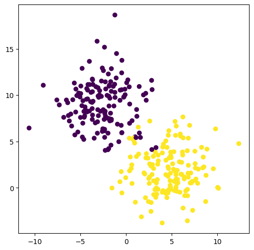
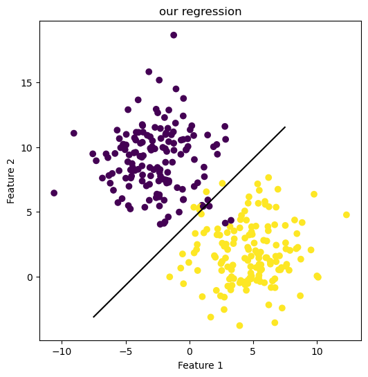
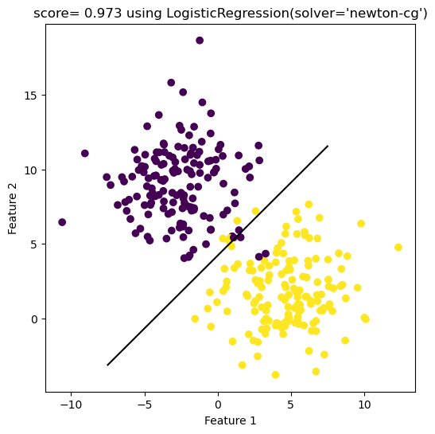

%load_ext autoreload
%autoreload 2The autoreload extension is already loaded. To reload it, use:
%reload_ext autoreloadXianzhi
April 10, 2023
The source code of our implementation could be found in this directory on github along with this blog post.
The autoreload extension is already loaded. To reload it, use:
%reload_ext autoreloadfrom matplotlib import pyplot as plt
import numpy as np
from sklearn.linear_model import LogisticRegression
import pandas as pd
from sklearn.preprocessing import LabelEncoder
from itertools import combinations
from matplotlib.patches import Patch
import seaborn as sns
# from mlxtend.plotting import plot_decision_regions
from sklearn.metrics import roc_curve
from sklearn.metrics import roc_auc_score
from sklearn.metrics import confusion_matrix
from sklearn.metrics import classification_report
from sklearn.metrics.pairwise import rbf_kernel# create test data set
X_train, y_train = make_blobs(n_samples=300, centers = 2, cluster_std= 2.5, n_features=2, random_state=42)
print(f"shape of X_train is: {np.shape(X_train)}")
print(f"shape of y_train is: {np.shape(y_train)}")
print(f"X_train.shape[0] is: {X_train.shape[0]}")
print(f"y_train.shape[0] is: {y_train.shape[0]}")
print(f"X_train.shape[1] is: {X_train.shape[1]}")shape of X_train is: (300, 2)
shape of y_train is: (300,)
X_train.shape[0] is: 300
y_train.shape[0] is: 300
X_train.shape[1] is: 2<matplotlib.collections.PathCollection at 0x7f75715ee5d0>
myNR = Newton_Raphson()
myNR.regress(y = y_train, X = X_train, max_iters=1e3, tol=1e-9, converged=False)number of iteration: 10
beta: [[ 0.88131503]
[-0.8612759 ]
[ 3.62857607]]
number of iteration: 20
beta: [[ 1.05875831]
[-1.08493095]
[ 4.57156319]]
number of iteration: 30
beta: [[ 1.05911467]
[-1.08539209]
[ 4.57354849]]
number of iteration: 40
beta: [[ 1.05911502]
[-1.08539254]
[ 4.57355043]]
Converged with 41 iterations
The beta we end up with is: [[ 1.05911502]
[-1.08539254]
[ 4.57355043]]myNR.bare_bone_plot(X_train, y_train, 6,6)
print(f"the score of our Newton_Raphson implementation is: {myNR.score(X_train,y_train)}")
# print(NR.score(X_test,y_test))
# print(NR.score(X_validate,y_validate))the weight beta is: [[ 1.05911502]
[-1.08539254]
[ 4.57355043]]
the score of our Newton_Raphson implementation is: 0.9733333333333334
sklearn library.array([[ 0.98557955, -1.00811845]])# LRscoreTest = LR.score(X_test, y_test)
# print(LRscoreTest)
LRscoreTrain= LR.score(X_train, y_train)
print(LRscoreTrain)0.9733333333333334print(LR.coef_)
a_0 = LR.coef_[0][0]
a_1 = LR.coef_[0][1]
print(LR.intercept_[0])
plt.rcParams["figure.figsize"] = (6,6)
fig = plt.scatter(X_train[:,0], X_train[:,1], c = y_train)
xlab = plt.xlabel("Feature 1")
ylab = plt.ylabel("Feature 2")
f1 = np.linspace(-7.5,7.5, 501)
p = plt.plot(f1, - (LR.intercept_/a_1) - (a_0/a_1)*f1, color = "black")
title = plt.gca().set_title(f"score= {round(LRscoreTrain,3)} using {LR}")[[ 0.98557955 -1.00811845]]
4.250774512606014
It looks like we made it! Our implementation and the one from sklearn perform in the same way.